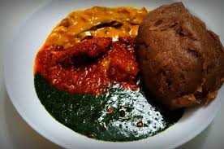

HOW TO PREPARE AMALA, EWEDU and GBEGIRI
Ingredients
* Ewedu leaves, also known as jute leaves in English
* Powdered potash. Half of a teaspoon should do
* Iru: known as locust beans in English
* Seasoning cubes
* Salt to taste
* Beans flour
* Palm oil
* Crayfish
* Seasoning cubes
* Pepper and salt
* Smoked fish
* Yam flour
* Water
DIRECTIONS
For Ewedu
Make sure your ingredients are ready. Wash your leaves thoroughly and remove the stem and stalk. If you’re using
potash and you have the solid one, ground it into a smooth powder and set aside. That’s all.
For Gbegiri
The only thing to do here is to mix your bean flour with water and set aside. This won’t take any of your time
hence why using bean flour is preferable. If you use raw beans, you must cook and process them yourself into
flour which can take time. With bean flour, it’s very easy.
For Amala
Amala is just like making garri. There’s nothing to do. Just keep your yam flour handy.
Cooking Instructions
As stated earlier, we’ll start with Ewedu, the Gbegiri, and lastly, Amala. So, follow the below step by step
instructions to prepare amala, ewedu, and gbegiri.
Ewedu
* Light your gas or stove and place your pot
* Fill the pot with water and add potash.
* Let the water boil; add the Ewedu leaves while it boils
* Cook the leaves and potash until soft. It should take 5 minutes.
* Turn off the heat and put the leaves into a blender. Blend your boiled Ewedu until it forms a paste. The ewedu
leaves are traditionally mashed using an ijabe broom. A blender is, however, recommended because pieces of the ijabe
broom can break into your soup which is a health risk
* Add the blended leaves back to the pot and switch to medium heat
* After 2 minutes, add salt, seasoning cubes, and Iru if available. Stir well and cook for 4–5 minutes
* Your ewedu soup is ready
Gbegiri
* Set the heat on your burner or gas to medium and place your cooking pot
* Add the palm oil and wait for it to heat up then add your beans flour (already mixed in water)
* If you haven’t already mixed your bean flour, you may simply add it to the pot and add water then stir properly
* Next, add your salt, pepper, crayfish, and smoked fish as included in this recipe. Make sure to stir properly and
add more water if necessary
* Turn the heat down to medium-low and cover your pot. Leave it to cook for about 5 minutes
* The palm oil and the rest of the ingredients should be fully mixed at this point. While you’re waiting the five
minutes, be sure to keep stirring the pot to prevent it from burning
* Once the soup gets thick to your preferred consistency, you can take it down.
Amala
* Making amala is very simple. Here’s what you should do:
* Pour your yam flour in a bowl
* Boil water and add to the bowl of yam flour
* Use a wooden ladle (known locally as garri turner) and stir until the amala gets solid and smooth
* That’s all
If you want to make soft Amala, you can add a little water to the amala and put it on the stove to boil on low heat.
Take it down after about 3 minutes.
* That’s it, you amala, ewedu, and gbegiri is ready.